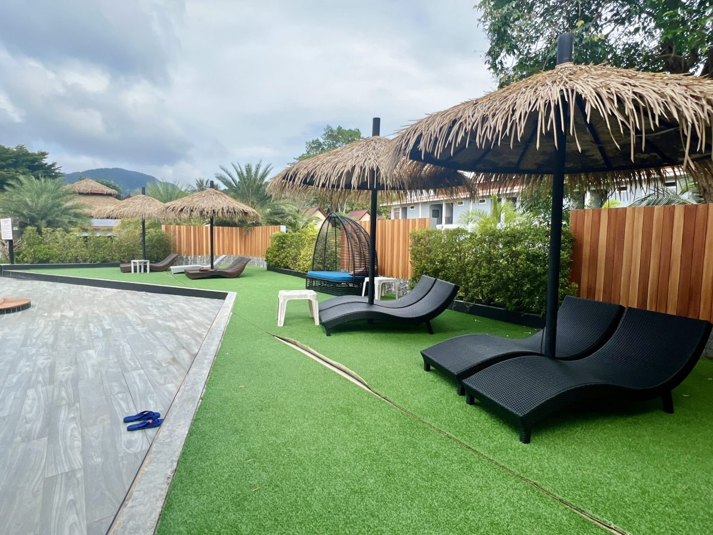
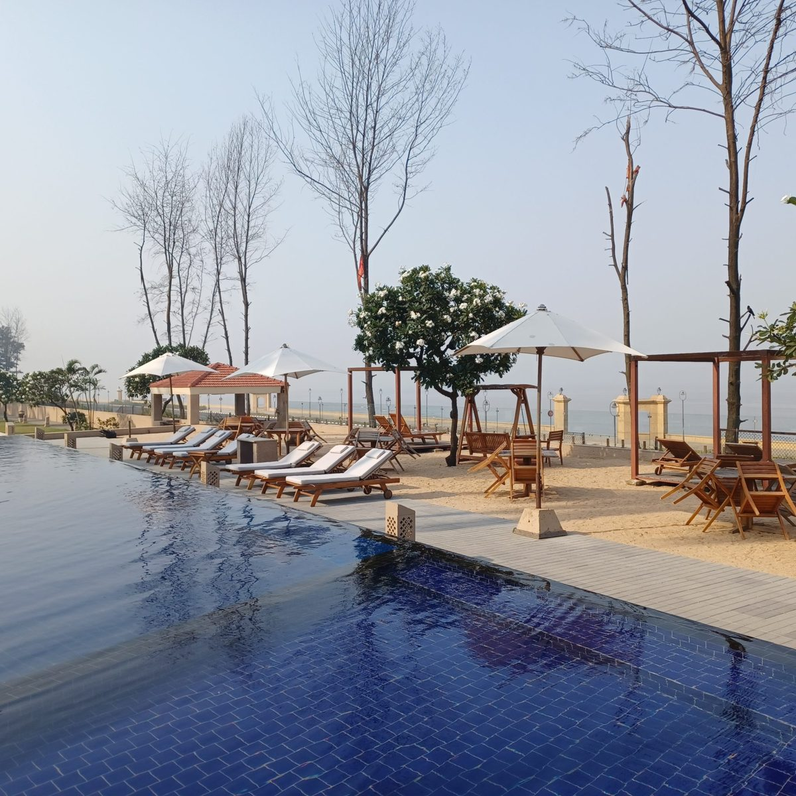
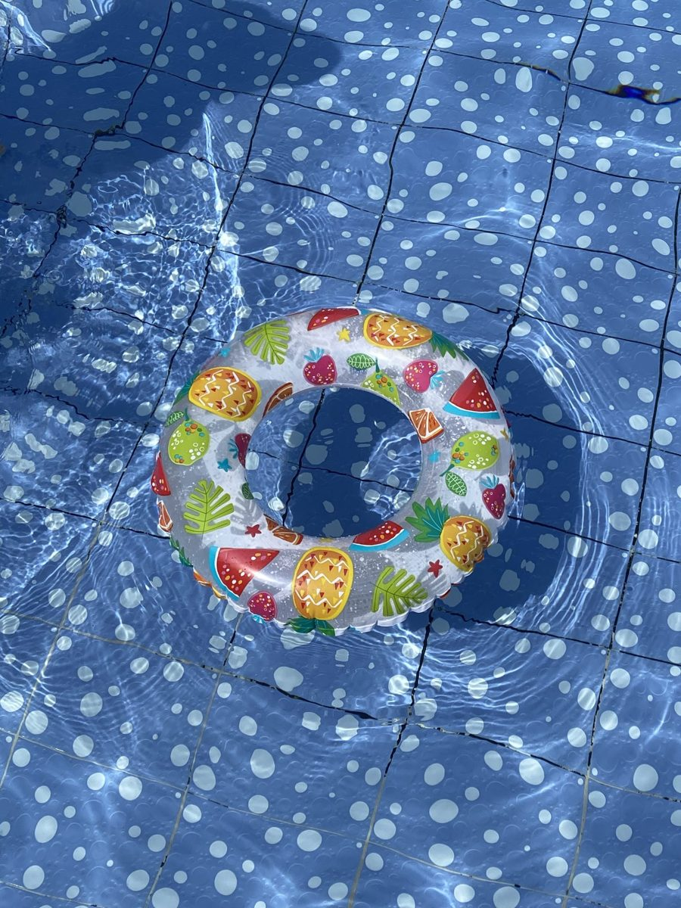

LANE 2
店のこと
お店について確認できているのは、所在地・電話番号・Instagramのアカウントです。
確認できていること
- 店名は「sunday pool coffee」、業種はカフェ
- 所在地は北海道室蘭市高砂町５丁目１８−２(〒050-0072)
- 電話番号は050-1277-6270
- Instagramのアカウントは @sundaypoolcoffee
- 営業時間・定休日・メニュー・価格・ご予約・駐車場は準備中

想像してみる(イメージ)
この囲みの中は、制作側が想像して書いたものです。お店の実際の様子・考え・提供内容とは関係がありません。
日曜日の午後に、プールの端からもう一本だけ泳ぐように、のんびりコーヒーの時間を過ごす。そんな過ごし方をいつか想像してみたくなる店名です。実際にどんなお店なのかは、Instagramで確かめてみたいと思います。

